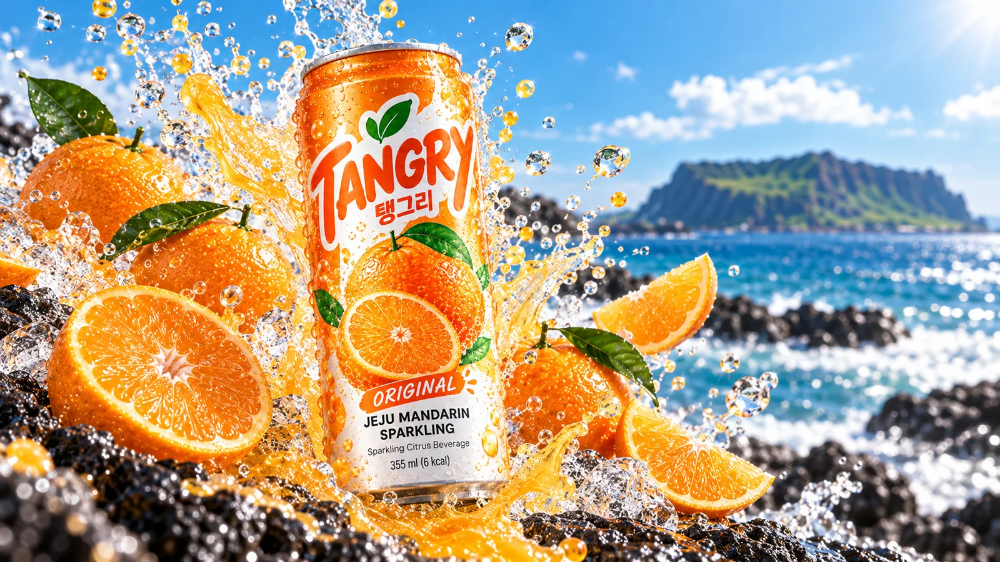
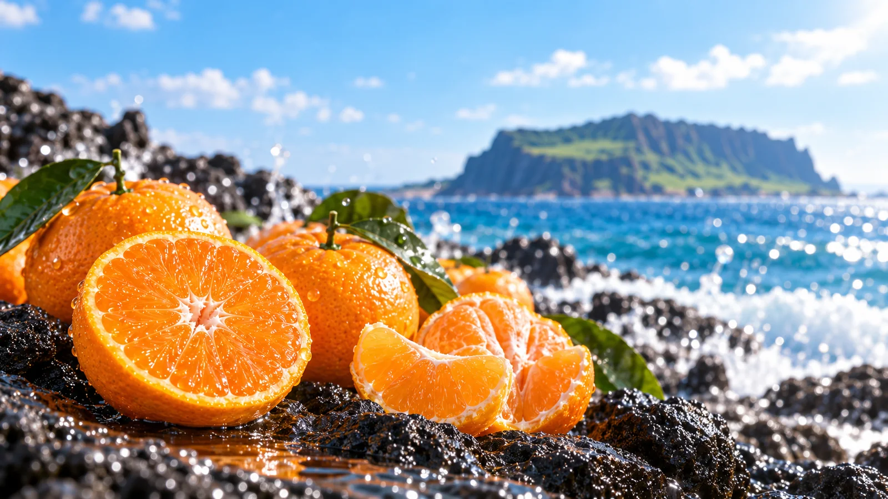
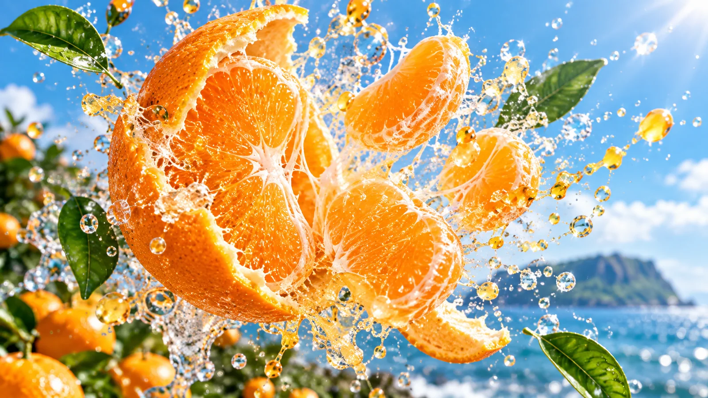
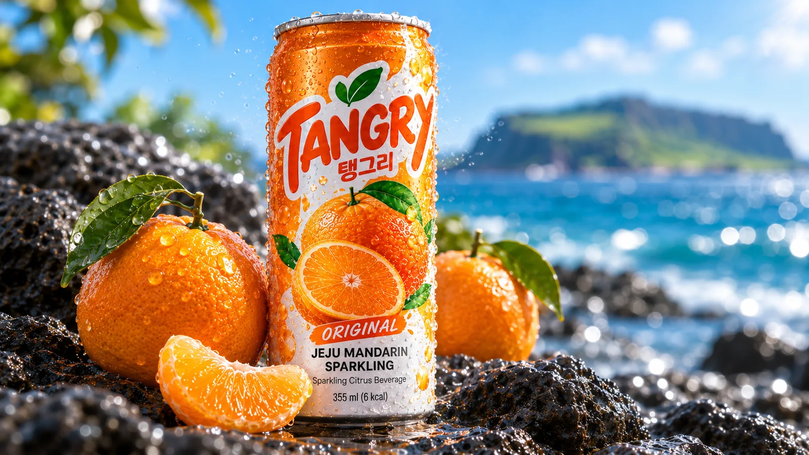
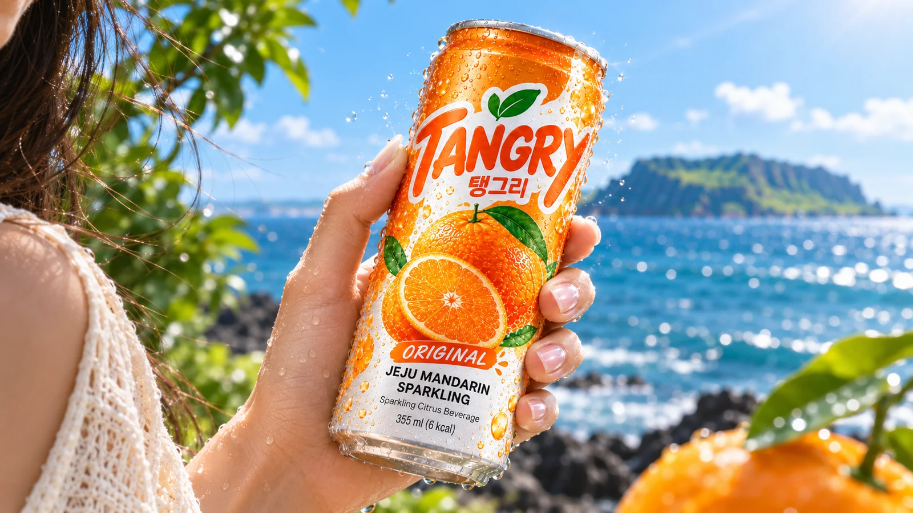
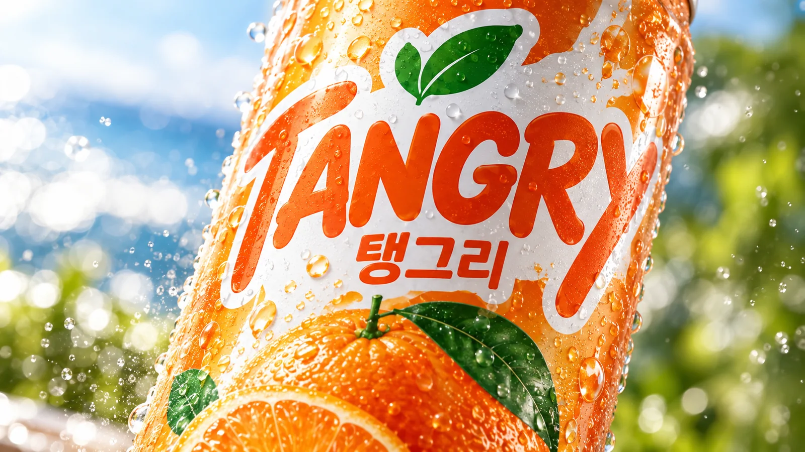
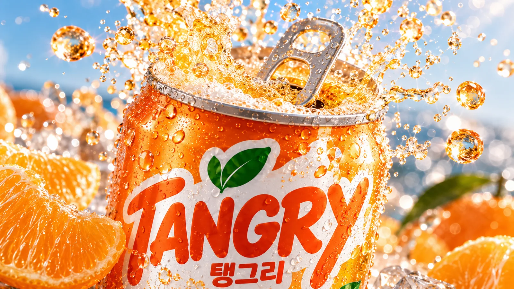
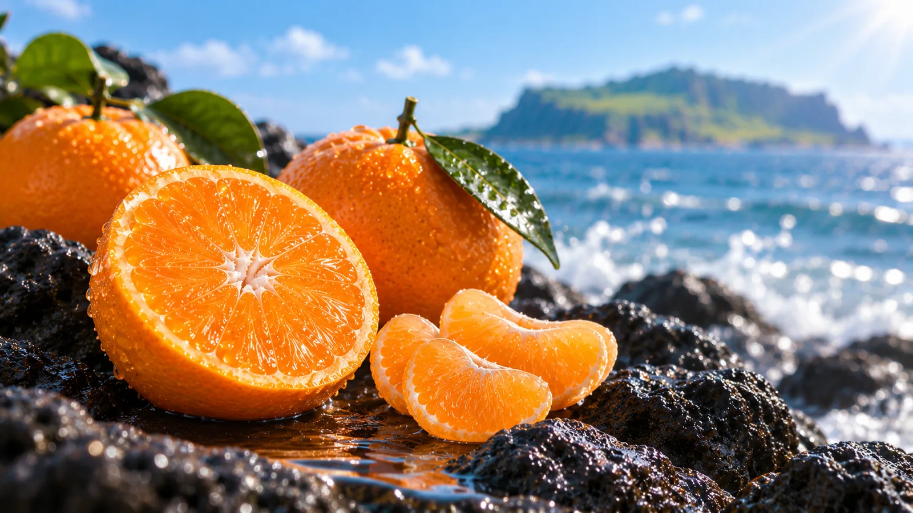

02 / AI CREATIVE CASE STUDY · 2026
ORIGINAL VIRTUAL BEVERAGE BRAND
TANGRY®
JUICY ENERGY,
SPARKLING JEJU.
제주 감귤의 생동감을 탄산 브랜드로 확장하다.
브랜드 콘셉트부터 패키지·제품 비주얼·TVC 스토리보드까지.
From fruit
to a complete
brand campaign.
하나의 음료 제품을,
실제 광고 캠페인처럼 설계한 프로젝트.
제주 감귤을 모티브로 한 가상 탄산음료 브랜드 TANGRY를 기획하고, 브랜드 컬러와 패키지 아이덴티티를 기준으로 광고용 제품 비주얼과 TVC 장면 흐름을 확장했습니다.
실제 출시 제품이 아닌 포트폴리오용 가상 브랜드·AI 제작 프로젝트입니다.
TANGRY / ORIGINAL
Fresh fruit.
Sharp fizz.
오렌지·화이트·그린·스카이블루를 중심으로 감귤의 생동감과 탄산의 청량함이 동시에 느껴지도록 브랜드의 시각 언어를 구성했습니다.


VISUAL DNA
MANDARINJEJU GREENSPARKLING SKYTANGRY ORIGINAL
Designed
to be recognized.
제품의 오렌지 컬러와 감귤 그래픽, 로고 비율을 유지하면서 실제 음료 광고에서 반복 노출되어도 브랜드가 즉시 인지되도록 제품 아이덴티티를 정리했습니다.



One product.
Many moments.
원물의 신선함, 차가운 캔의 응결, 탄산의 순간, 실제 음용 장면까지 하나의 광고 톤으로 연결했습니다.




A commercial
before the film.
최종 영상 제작 전, 장면마다 무엇을 보여줄지 먼저 정리했습니다. 감귤 원물에서 제품 인지와 음용 경험까지 자연스럽게 연결되는 흐름입니다.
Origin
제주 감귤과 자연 환경으로 원재료의 인상을 먼저 전달
Energy
과즙과 탄산의 움직임으로 탱그리의 생동감을 시각화
Product Reveal
캔과 로고가 명확히 보이는 제품 중심 키비주얼 전개
Open & Drink
캔 오픈과 모델 음용 장면으로 청량한 사용 경험 연결
Brand Finish
제품과 브랜드가 기억에 남도록 밝고 선명한 엔딩 설계
From concept
to campaign.
브랜드를 먼저 정의하고 제품 비주얼을 고정한 뒤, 각 광고 장면의 목적에 맞춰 AI 이미지를 확장하는 방식으로 진행했습니다.
Brand concept
제주 감귤 스파클링 제품 콘셉트와 브랜드 톤 설정
Package identity
제품 로고, 컬러, 감귤 그래픽을 중심으로 패키지 아이덴티티 구성
Visual consistency
광고 장면마다 제품 비율과 로고, 컬러가 유지되도록 이미지 조정
Scene development
원물·제품·매크로·음용 장면 등 목적별 캠페인 이미지 제작
TVC planning
최종 영상 제작을 위한 광고 장면 흐름과 스토리보드 설계
TOOLS & METHODS 생성형 이미지 제작 · 제품 레퍼런스 기반 비주얼 일관성 관리 · TVC 스토리보드 설계
MORE CREATIVE PROJECTS